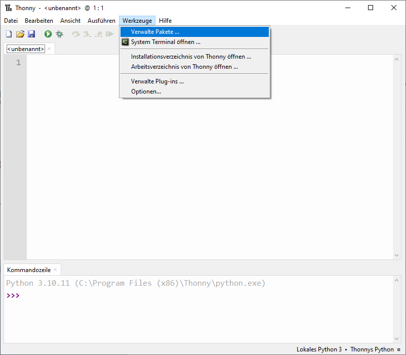
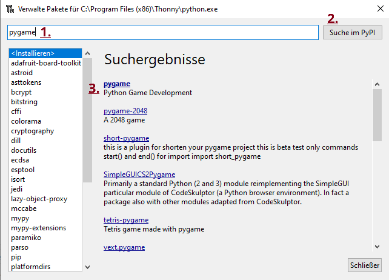
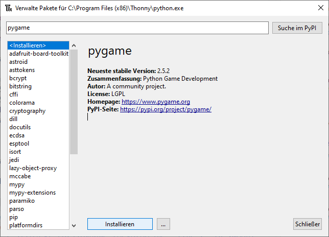

Installieren des Pakets pygame in Thonny
Thonny installiert das Paket (Bibliothek) pygame nicht automatisch. Darum müssen wir das Paket selbst nachladen. Dazugehst du wie folgt vor:
-
Öffne Thonny und dort die Paketverwaltung.
 -
Gib im Suchfenster (1.) "pygame" ein, klicke auf Suchen (2.) und wähle dann bei den Ergebnissen pygame (3.).
 -
Klicke auf installieren. Danach kannst du in Thonny pygame verwenden.
